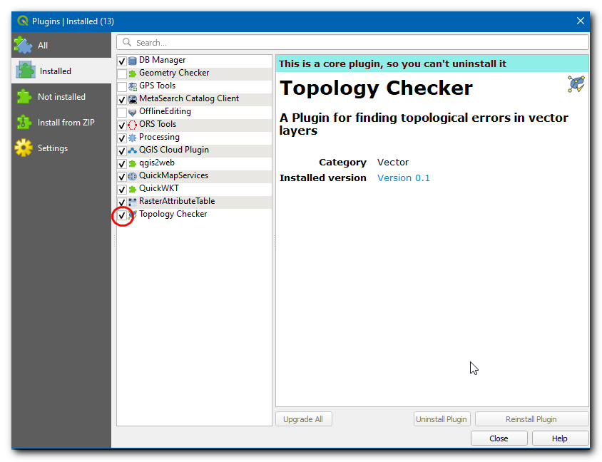
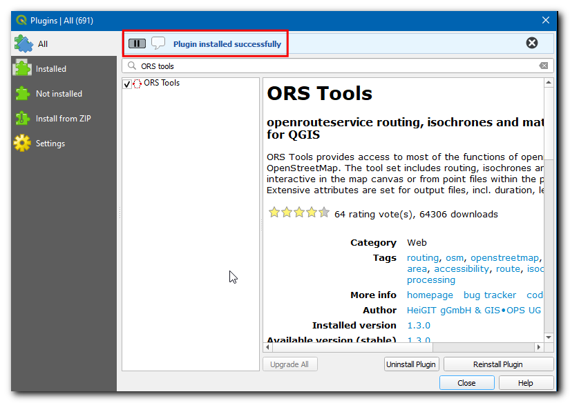
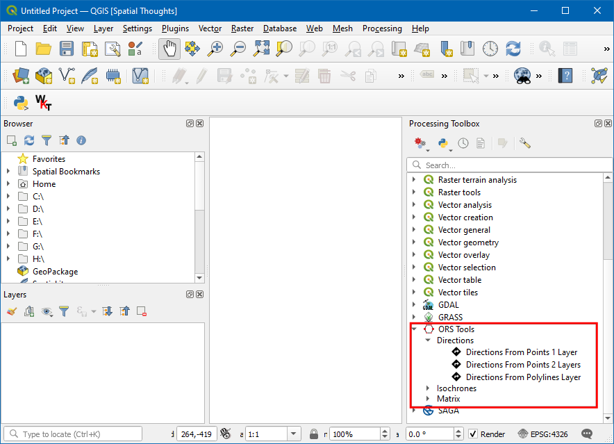
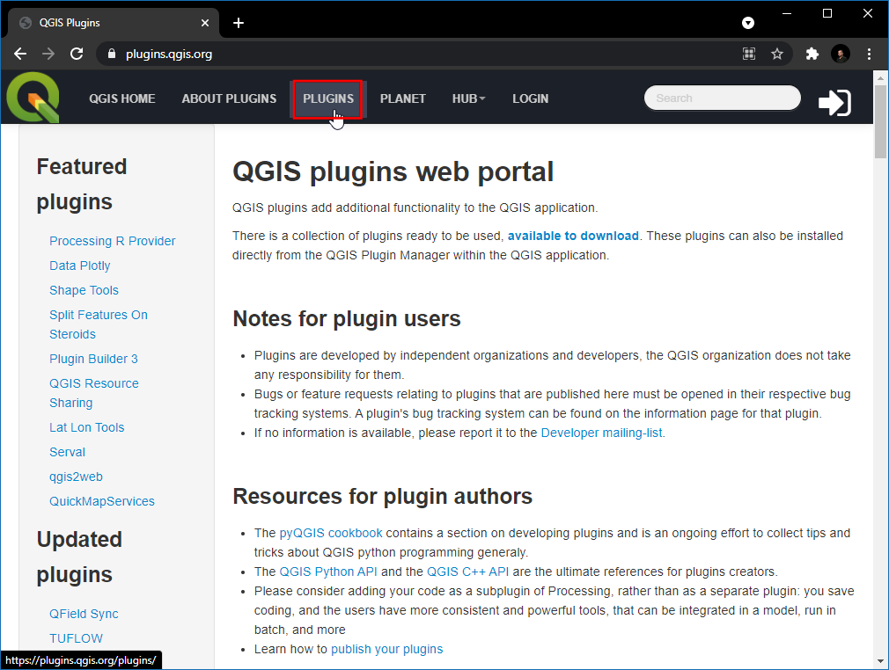

Plug-ins gebruiken (QGIS3)¶
Plug-ins in QGIS voegen nuttige mogelijkheden toe aan de software. Plug-ins worden geschreven door ontwikkelaars van QGIS en andere onafhankelijke ontwikkelaars die de bronfunctionaliteit van de software willen uitbreiden. Deze plug-ins worden dan geüpload naar de opslagplaats voor Plug-ins voor QGIS, nagekeken door leden van de gemeenschap en dan voor alle gebruikers van QGIS beschikbaar gemaakt.
Overzicht van de taak¶
In deze handleiding zult u leren hoe u Bron plug-ins inschakelt als ook Plug-ins van derden downloadt en installeert. U zult ook leren hoe u de plug-ins kunt vinden en uitvoeren als zij eenmaal zijn geïnstalleerd.
Procedure¶
Bron plug-ins¶
Bron plug-ins maken al deel uit van de standaard installatie van QGIS. U hoeft ze alleen maar in te schakelen om ze te kunnen gebruiken.
Open QGIS. Klik op . om het dialoogvenster Plug-ins te openen.

Zelfs als dit de eerste keer is dat u QGIS gebruikt, zult u veel plug-ins zien vermeld onder de tab Geïnstalleerd. Dat komt omdat zij Bron plug-ins zijn en werden geïnstalleerd gedurende de installatie van QGIS.

Laten we één van de plug-ins inschakelen. Selecteer het vak naast Plug-in Topologie Checker. Dit zal de plug-in inschakelen en u zult in staat zijn om die te gebruiken. Eén ding om te onthouden is dat plug-ins nieuwe menu-items kunnen invoegen op verscheidene locaties en nieuwe panelen en werkbalken te maken. Soms is het moeilijk te weten hoe de nieuw ingeschakelde gereedschappen zijn te vinden. Eén tip is om in de beschrijving van de plug-in te kijken. Hier zegt de beschrijving Categorie: Vector. Dat geeft aan dat de plug-in zou kunnen worden gevonden onder het menu Vector`als hij eenmaal is ingeschakeld. Daarnaast, deze plug-ins kunnen niet worden gedeïnstalleerd. Klik op :guilabel:`Close.
Notitie
Veel bronplug-ins zijn niet standaard ingeschakeld. Plug-ins worden geladen bij het opstarten van QGIS, dus het inschakelen van veel plug-ins zou de tijd voor het opstarten kunnen verlengen. Uitschakelen van alle plug-ins is niet nodig voor een betere ervaring.
Nu de plug-in Topologie Checker is ingeschakeld, kunt u gaan naar om de door de plug-in toegevoegde functionaliteit te gebruiken.

Plug-ins van derden¶
Plug-ins van derden zijn beschikbaar in de `QGIS Plugins Repository `_ en moeten door de gebruikers worden geïnstalleerd voordat zij kunnen worden gebruikt. Plug-ins van derden kunnen ruwweg worden gecategoriseerd in de volgende sub-groepen.
Plug-ins voor GUI
Plug-ins voor Processing
Experimentele plug-ins
We zullen nu leren hoe plug-ins uit elk van deze categorieën te installeren.
Plug-ins voor GUI¶
Deze plug-ins worden geïnstalleerd in een van de menu’s of werkbalken. We zullen nu de plug-in, genaamd QuickWKT, installeren, die het voor gebruikers mogelijk maakt tekenreeksen voor WKT-geometrieën te kopiëren/plakken en ze te visualiseren.
Open QGIS. Klik op . om het dialoogvenster Plug-ins te openen.

Klik op de tab Alles. Hier zult u een lijst met plug-ins zien vermeld.

Laten we voor deze handleiding eens zoeken naar de plug-in genaamd ‘QuickWKT’ en die installeren. Als u begint met het typen van qui in het vak Zoek, zult u de zoekresultaten eronder zien. Klik op QuickWKT.

Nu zal informatie over de plug-in worden weergegeven, deze plug-in is een weergave voor WKT. Klik op de
wktbij Tags, dat zal alle plug-ins met deze tag ophalen.
Klik nu op Plug-in installeren in het dialoogvenster Plug-ins van QGIS. Nu zal een informatiebalk van QGIS verschijnen met het bericht
Plug-in met succes geïnstalleerd.
Als u het heeft gezien: er stond geen vermelding voor de categorie in de beschrijving van de plug-in. Dat maakt het moeilijk te bepalen hoe toegang te krijgen tot de nieuw geïnstalleerde plug-in. De meeste plug-ins worden geïnstalleerd onder het menu Plug-ins in QGIS. Klik op en u zult de nieuw geïnstalleerde plug-in zien. De plug-in voegt een knop toe in de werkbalk Plug-ins. U kunt ook die knop gebruiken om toegang te krijgen tot de plug-in.

Plug-ins voor Processing¶
Deze plug-ins zullen nieuwe algoritmes (d.i. gereedschappen) toevoegen aan de Toolbox van Processing in QGIS. Dit is de voorkeursmanier om plug-ins te bouwen die nieuwe functionaliteit voor ruimtelijke analyses toevoegen. In plaats van een zelfstandig gereedschap, kan een algoritme in de Toolbox van Processing worden gebruikt als deel van Grafische modellen bouwen of in een modus batch-verwerking voor het automatiseren van werkstromen voor GIS. We zullen nu een plug-in voor Processing installeren.
Open QGIS. Klik op . om het dialoogvenster Plug-ins te openen.

Klik op de tab Alles en zoek naar ORS tools.

Klik nu op de plug-in en dan op Plug-in installeren in het dialoogvenster Plug-ins van QGIS. Als de plug-in met succes wordt geïnstalleerd zal een informatiebalk van QGIS verschijnen met het bericht
Plug-in met succes geïnstalleerd.De plug-in zal een map met gereedschappen toevoegen in de Toolbox van Processing. Ga naar .

Er zijn veel groepen van gereedschappen, en die met het logo van QGIS ernaast worden Eigen algoritmes genoemd. U zult onderaan een nieuwe map opmerken die is genaamd ORS Tools. Deze werd toegevoegd door de plug-in die we zojuist installeerden en stat bekend als een Provider. Plug-ins voor QGIS Processing zijn in staat nieuwe Providers toe te voegen - zoals ORS Tools - die één of meer nieuwe algoritmes voor Processing kunnen bevatten.

Vergroot de map ORS tools om alle beschikbare gereedschappen daarin te verkennen. U kunt dubbelklikken op het gereedschap om het uit te voeren.

Notitie
Plug-ins kunnen zowel nieuwe gereedschappen toevoegen als ook nieuwe menu-items. De plug-in ORS Tools voegt ook een nieuw menu-item voor configuratie toe onder het menu .
Experimentele plug-ins¶
Soms zoekt u naar een specifieke plug-in, maar u kunt die niet vinden op de tab Alles. Dat kan misschien zijn omdat de plug-in is gemarkeerd als Experimenteel. Hier vindt u hoe een experimentele plug-ins te installeren.
Open Plug-ins via . Klik op de tab Instellingen. U zult een optie zien, genaamd Ook de experimentele plug-ins tonen. Klik op het keuzevak ernaast om het in te schakelen.

Schakel terug naar de tab Alles en zoek naar de plug-in ‘RasterAttributeTable’.

Klik op de plug-in, u kunt zien dat die is gemarkeerd als Experimenteel. Klik op Experimentele plug-in installeren en sluit het dialoogvenster Plug-ins.

Notitie
Wees voorzichtig met het gebruiken van experimentele plug-ins. De experimentele plug-in zou niet goed getest kunnen zijn of te snel kunnen zijn ontwikkeld.
U kunt de plug-in gebruiken door te gaan naar .

Verkennen van de opslagplaats voor plug-ins voor QGIS¶
QGIS heeft een rijk ecosysteem van plug-ins van 3e-partijen. De officiële opslagplaats van plug-ins voor QGIS bevat meer dan over 1000 plug-ins. U kunt er doorheen bladeren en ontdekken of er voor interessante nieuwe plug-ins bij zijn. We zullen nu de opslagplaats voor plug-ins verkennen.
Ga naar `Opslagplaats van plug-ins voor QGIS`_, en klik op PLUGINS.
Deze pagina vermeldt alle beschikbare plug-ins. U kunt op de koppen klikken om de plug-ins op verschillende attributen te sorteren.

Er zijn ook verschillende gedeelten, zoals Featured, Popular etc. om het mogelijk te maken interessante plug-ins te ontdekken. Klik op New Plugins, dat zal de nieuwste plug-ins ophalen. U kunt elke plug-in selecteren die u wilt. Voor deze handleiding zullen we RasterAttributeTabel kiezen.

Schakel naar Versions, hier wordt de geschiedenis van uitgaven en beschikbare versies vermeldt. Veel plug-ins zijn slechts compatibel met bepaalde versies van QGIS. De Minimum QGIS version vermeldt de versie van QGIS die is vereist voor de plug-in.

Als u eenmaal een plug-in hebt gevonden, kunt u QGIS openen en de plug-in installeren vanuit Plug-ins installeren en beheren… zoals in het eerdere gedeelte weergegeven.
If you want to give feedback or share your experience with this tutorial, please comment below. (requires GitHub account)